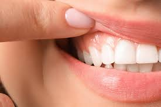

Asegúrate de cepillar todas las superficies de los dientes, incluyendo la parte frontal, posterior y las
superficies de masticación. Utiliza movimientos suaves y circulares.

Cuidado de las encías
Presta atención a tus encías. Si sangran, están inflamadas o sientes dolor, podría ser un signo de
enfermedad periodontal. Consulta a tu dentista si tienes preocupaciones..